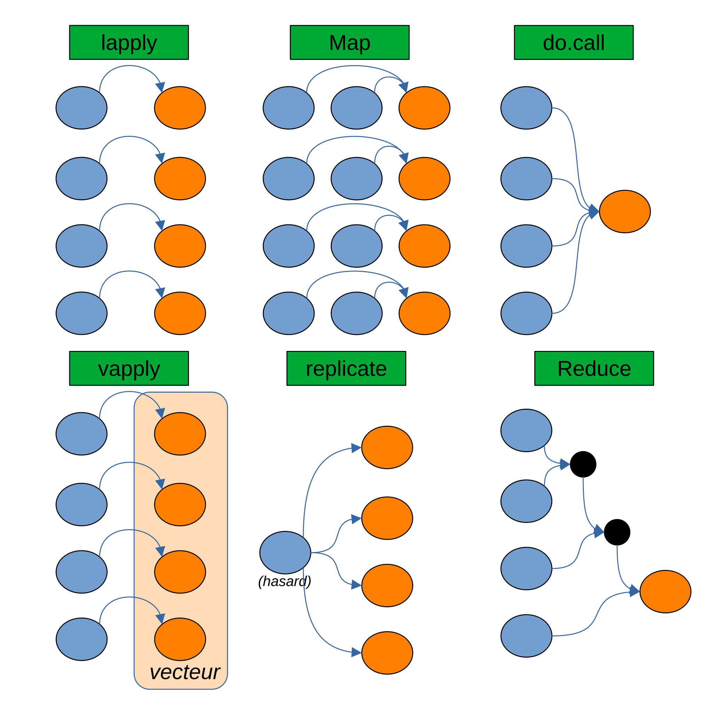

lapply(
list(c("a", "b"),
c("c", "d", "e"),
c("f", "g")),
function(x) c(x, x, x)
)Fonctions d’ordre supérieur (arguments)
Fonctions d’ordre supérieur
En informatique, la notion de fonction d’ordre supérieur désigne une fonction avec au moins l’une des propriétés suivantes :
- Elle a pour argument une ou des fonctions.
- Elles retournent a minima une fonction.
Les fonctions d’ordre supérieur sont un élément central permettant l’expressivité des langages fonctionnels.
Dans cette première partie sur les fonctions d’ordre supérieur, nous abordons la thématique des fonctions avec ayant des arguments fonctionnels.
Manipuler des fonctions avec des fonctions
On a déjà vu dans le point précédent deux fonctions qui s’appliquent sur des fonctions. do.call nous a permis d’appliquer une fonction de type function(...) sur une liste, tandis que Reduce nous a permis d’écrire 2 + 3 + 7 + 1 de manière un peu plus jolie qu’à la main.
On a vu dans l’introduction, également, que R est un langage principalement fonctionnel. R offre un certain nombre de fonctions permettant d’appliquer des fonctions de différentes manières. Nous verrons ici lapply, vapply, Map, replicate, apply, do.call, Reduce.

NoteRemarque optionnelle
Un package du tidyverse, purrr, donne accès à des fonctions similaires à toutes celles décrites dans cette partie. Ce lien donne des équivalents purrristes des fonctions d’ordre supérieur abordées ici.
L’usage est selon les gouts et les couleurs. Utiliser les fonctions de base est suffisant et permet de se débarasser d’une dépendance, mais purrr est plus cohérent avec le reste de l’écosystème tidyverse. Par exemple, il permet de passer facilement au package de parallélisation furrr.
lapply : appliquer une fonction à chaque élément d’une liste ou d’un vecteur
La fonction function(x) c(x, x, x) demande à répéter trois fois un élément. Cette fonction est appliquée terme à terme à chaque élement de la liste.
c("a", "b")donnec("a", "b", "a", "b", "a", "b")c("c", "d", "e")donnec("c", "d", "e", "c", "d", "e", "c", "d", "e")c("f", "g")donnec("f", "g", "f", "g", "f", "g")
Le calcul ci-dessus montre qu’on peut utiliser lapply à l’intérieur d’une autre fonction.
On s’est d’ailleurs permis ici de remplacer function(x) c(x, x, x) par une fonction nommée qui s’appelle repeter. Ce petit changement illustre un aspect implicite des deux précédentes syntaxes utilisées : on utilisait function(x) c(x, x, x) en lieu et place d’un nom de fonction à l’intérieur du lapply ! On appelle de telles fonctions, dépourvues de noms, des fonctions anonymes. Si une fonction n’a pour vocation que d’être utilisée une seule fois, cela peut rendre la syntaxe plus claire et plus élégante qu’une fonction nommée.
Dans ce dernier calcul, on remarque que l’on peut appliquer lapply sur un vecteur.
Toutefois, dans les 4 calculs, le résultat de lapply est une liste. lapply retourne une liste même quand on lui soumet un vecteur.
Note
Dans les versions de R récentes, on peut utiliser la notation compacte \(x) c(x, x, x) à la place de function(x) c(x, x, x) pour désigner une fonction.
À l’intérieur de l’écosystème tidyverse, on peut également utiliser la notation ~c(.x, .x, .x).
vapply : une sorte de lapply mais avec un retour sous forme d’un vecteur ou d’une matrice.
On l’a vu dans les exemples précédents, le retour de lapply est une liste. Mais une liste n’est pas l’objet le plus pratique à manipuler dans un langage vectoriel ! la fonction vapply permet de retourner les résultats sous la forme d’un vecteur ou d’une matrice (lorsque cela a une pertinence). La syntaxe est un peu particulière mais on s’y habitue vite !
vapply applique la fonction anonyme \(x) x[1L] + 1L sur chaque élément de la liste list(c(3L, 3L, 10L), c(7L, -2L, 11L, 22L), -1L) et renvoie un vecteur de type similaire à 0L (c’est-à-dire un "integer").
Note
On rappelle que dans R, une variable comme -1L n’est rien d’autre qu’un vecteur de taille 1L. C’est pour cela qu’on a pu appliquer \(x) x[1L] + 1L sur -1L.
Ce calcul est exactement similaire au précédent. Ce qui est mis en avant ici, c’est que seul le type du troisième argument (FUN.VALUE) importe, sa valeur n’a aucune importance. Ici, si on veut retourner un vecteur entier, n’importe quel entier de taille 1L fait l’affaire.
Dans le cas où, comme ici, chaque application unitaire de la fonction utilisée retourne plusieurs valeurs, alors l’argument FUN.VALUE doit être un vecteur de même taille.
- L’application de
\(x) c(x, x, x)sur"a"donnec("a", "a", "a"). - L’application de
\(x) c(x, x, x)sur"b"donnec("b", "b", "b"). - L’application de
\(x) c(x, x, x)sur"c"donnec("c", "c", "c"). - L’application de
\(x) c(x, x, x)sur"d"donnec("d", "d", "d").
On attend quatre objets de taille 3L. C’est pour cela que nous soumettons à l’argument FUN.VALUE un "character" de taille 3L.
L’objet retourné sera une matrice et non plus un vecteur. Comme dans le cas vectoriel, son type est déterminé par celui de FUN.VALUE.
Là encore, on remarque que les valeurs de l’argument FUN.VALUE sont purement arbitraires. Seules sa longueur et son type importent.
Comme on le voit ci-dessous, sapply est un raccourci de vapply sans la FUN.VALUE. sapply devine automatiquement les dimensions et le type requis. Utiliser un vapply explicite est cependant en général une meilleure pratique à l’intérieur d’un programme.
Warningsapply est plus laxiste que vapply
Essayer d’utiliser un sapply sur :
Que se passe-t-il ? Pourquoi ? Peut-on résoudre ce problème avec un vapply ?
TipRéponse
Les vecteurs retournés par la fonction c(x, x, x) sur ses entrées sont de tailles variables. C’est rédhibitoire pour que sapply puisse déterminer une dimension de matrice adéquate. sapply laisse donc le résultat sous la forme d’une liste.
On ne peut pas résoudre ce problème structurel avec un vapply, mais vapply a le mérite d’être plus strict : il renverra une erreur si les valeurs ne sont pas de la dimension explicitement demandée. vapply est en général une meilleur pratique.
Map : appliquer une fonction multi-paramètres termes à termes
On a vu avec lapply comment appliquer une fonction sur chaque termes d’une liste ou d’un vecteur et retourner une liste. Cependant, parfois, un seul argument ne suffit pas, et l’on a envie d’appliquer une fonction terme à terme sur plusieurs listes ou vecteurs. La fonction Map remplit ce besoin.
On voit ici que la fonction Map permet d’appliquer termet à terme la fonction paste sur plusieurs vecteurs character.
L’argument MoreArgs de Map permet de rajouter une liste d’arguments complémentaires, qui restent fixes entre tous les appels.
On aurait aussi tout aussi pu utiliser une fonction anonyme pour spécifier des arguments complémentaires. C’est au choix !
On vérifie ci-dessus que la fonction Map permet d’utiliser plus que deux arguments.
La fonction Map peut tout-à-fait utiliser des listes. Ici, elle renvoie donc une liste appliquant la fonction + terme à terme :
c(1L, 2L, 3L) + c(10L, 11L, 12L)pour le premier terme.c(4L, 5L, 6L, 7L) + c(13L, 14L, 15L, 16L)pour le deuxième terme.c(8L, 9L) + c(17L, 18L)pour le troisième terme.
replicate : une variante commode de lapply pour les générations de nombres aléatoires
Certaines fonctions utiles en statistiques génèrent des nombres aléatoires. Par exemple, runif(2L) renvoie 2L nombres entre 0 et 1 selon une loi uniforme. Si on veut générer 4L vecteurs de 2L nombres aléatoires, on voudrait appliquer un lapply sur function() runif(2L).
Le problème, c’est que cette fonction est sans paramètre. Du coup comment lui spécifier un lapply de bonne longueur ? On voudrait faire un truc du genre :
Mais cela n’est pas permis par R. On peut contourner le problème avec la solution ci-dessous :
Ce n’est cependant pas des plus élégants, car on utilise un argument purement fictif. Une alternative un peu plus claire existe donc. C’est la fonction replicate.
replicate est une variante de lapply qui permet d’évaluer une expression plusieurs fois de suite. Cela n’est, bien entendu, utile que dans le cas où cette expression renvoie des résultats différents à chaque évaluation, ce qui est notamment le cas en ce qui concerne la générations de nombres aléatoires.
On note l’argument simplify = FALSE à la fin. Si celui-ci n’est pas spécifié, il est par défaut défini à la valeur TRUE, et alors replicate se comporte comme un sapply ; il essaye de construire des matrices.
Note
Puisque replicate ne prend pas une fonction pour argument mais une expression, elle n’est pas stricto censu une fonction d’ordre supérieur. On la fait tout de même figurer ici car elle reste voisine d’un lapply.
apply : appliquer une fonction sur les lignes ou les colonnes d’une matrice
apply permet d’appliquer une fonction par ligne ou par colonne sur une matrice.
Dans le tronçon de code ci-dessus, on a appliqué la fonction max (maximum) respectivement sur chaque ligne et chaque colonne. C’est l’argument MARGIN en deuxième position qui permet de déterminer la direction de cette application de fonction (1 pour les lignes, 2 pour les colonnes).
Note
Il est à noter que quelques optimisations de ces fonctions existent. rowSums, colSums, rowMeans, colMeans ont toutes les quatre des noms assez parlants qui permettent d’éviter une écriture un peu trop poussive.
do.call : appliquer une fonction multi-paramètres sur une liste d’arguments
La fonction do.call permet d’utiliser une fonction multi-paramètres, par exemple (mais pas obligatoirement) une fonction dépendant de paramètres en dots ..., sur une liste de valeurs.
Ici, on a appliqué la fonction paste en même temps sur chaque élément de la liste fournie en argument. On peut noter, également, que les éléments nommés de la liste (ici sep) sont traduits par des arguments nommés.
Reduce : réduire une liste ou un vecteur d’arguments par application successive d’un opérateur binaire
La fonction Reduce permet d’appliquer consécutivement une opération binaire.
Cet exemple (que l’on a déjà vu dans le chapitre précédent) correspond à ((1 + 2) + 8) + (-7). Chaque étape utilise l’opération binaire +.
Comme on le voit ci-dessus, on peut éventuellement, à l’aide de accumulate = TRUE, conserver les résultats intermédiaires de la réduction. À savoir ici 1, puis 1 + 2, puis 1 + 2 + 8 et enfin 1 + 2 + 8 - 7.
Mais Reduce peut être employé dans des calculs plus complexes.
Dans l’exemple précédent, on a appliqué sur une liste de fonctions l’opérateur Reduce au sens de la composition. C’est un joli exemple pour montrer la richesse d’un langage fonctionnel et illustrer l’idée que Reduce n’est pas restreint à des opérations numériques. En général, cependant, on préfèrera éviter d’empiler des fonctions non-évaluées. On préfèrera donc une notation intermédiaire comme employé ci-dessous.
Ici, plutôt que d’empiler des fonctions en mémoire, on les applique successivement. applique_fonction reste une opération binaire, mais est une loi de composition externe, dans la mesure où f est une fonction tandis que accumulateur est un résultat numérique. On remarque aussi qu’on a utilisé l’argument init de Reduce qui permet d’initialiser l’accumulateur. En effet si on veut obtenir atan(pi) / 3 + 1 il faut bien renseigner qu’on commence à pi quelque part. L’argument right = TRUE permet de parcourir la liste de droite à gauche plutôt que de gauche à droite.
Exercices
Question 1
À l’aide de la fonction pmax (sans utiliser la fonction max), calculer le maximum de cette liste. Vous pouvez consulter l’aide de la fonction pmax avec help(pmax).
TipProposition de solution
liste <- list(1, -7, 8, 0)
do.call(pmax, liste)[1] 8Question 2
Générer une liste avec 10 vecteurs de taille 60, chacun répartis selon une loi normale d’espérance 3 et d’écart-type 0.5. Vous pouvez consulter l’aide de la fonction rnorm via help(rnorm).
TipProposition de solution
replicate(10, rnorm(n=60,mean = 3,sd = 0.5), simplify = FALSE)[[1]]
[1] 2.682840 2.533858 3.741818 2.628693 3.391218 3.108612 2.502224 3.135957
[9] 3.171969 2.592041 3.547960 2.555138 3.028077 2.547985 3.014902 2.039449
[17] 3.130500 3.029463 3.153153 3.064836 2.835072 2.375819 3.406076 2.767859
[25] 2.353026 2.288923 3.273440 2.996646 3.153733 3.365014 3.406743 3.144810
[33] 3.571332 3.316678 2.033682 3.311313 3.241302 4.196745 2.453967 2.709913
[41] 2.494494 2.538620 2.793223 3.249111 2.815572 3.029643 2.717759 2.744329
[49] 2.542738 2.755612 2.621644 3.451770 3.790150 4.087648 3.145889 1.921286
[57] 3.588278 3.234764 3.065167 3.078702
[[2]]
[1] 2.694487 2.647674 3.081222 2.555011 3.770747 2.874864 2.787599 2.943045
[9] 3.141856 4.172464 2.233485 2.799444 3.143697 3.112867 2.860182 3.151769
[17] 3.024577 2.866754 3.526892 2.919330 3.276959 3.578671 2.752469 2.788900
[25] 3.095172 1.925486 3.165310 3.431973 3.530348 3.131122 2.410965 3.048430
[33] 2.948926 2.133862 2.914044 3.549313 2.963006 3.420114 2.864838 2.536310
[41] 2.159539 3.021450 2.784024 3.303410 2.704389 3.326984 3.300664 2.838983
[49] 3.675473 3.554336 2.500559 3.141301 2.832016 2.609475 3.201268 2.673742
[57] 3.485521 3.092367 3.517211 4.102616
[[3]]
[1] 2.450781 1.937601 3.545170 2.331809 3.205426 2.925312 3.326750 3.094802
[9] 3.193818 2.956734 3.061895 3.052131 3.145201 3.542808 1.937278 3.048403
[17] 3.013269 3.470961 3.888014 3.418958 3.092063 3.573325 3.451234 3.850088
[25] 2.741883 2.520414 3.347755 2.786590 3.007688 3.129205 3.275022 2.816470
[33] 3.011510 3.445030 2.314359 3.949181 2.901421 3.064423 2.753833 3.346342
[41] 3.738535 2.927799 2.449772 2.206971 3.736577 1.881371 2.176254 3.092701
[49] 3.454962 3.155893 3.239430 3.023566 2.555719 3.277648 2.662913 2.728609
[57] 3.040788 2.751928 3.919951 2.827878
[[4]]
[1] 3.954814 3.039282 3.191916 3.429492 3.286248 2.885127 2.701432 2.975969
[9] 2.994730 3.239258 3.819214 3.089797 3.087064 3.113222 2.368938 3.664270
[17] 2.098304 3.274288 2.136010 2.783287 3.511365 2.911899 3.589884 3.033992
[25] 3.478173 3.130400 3.245673 2.701656 3.353785 2.903303 2.926647 2.274977
[33] 3.352327 3.795784 2.929552 3.536216 2.553912 2.465271 3.212142 2.643095
[41] 3.214554 2.330358 2.363900 2.642419 3.134941 1.946795 2.894630 3.517323
[49] 2.760248 3.423338 3.068279 3.219914 2.319330 3.385760 2.674737 3.591103
[57] 3.059193 2.946799 2.068008 3.021499
[[5]]
[1] 2.834713 2.968253 3.891785 3.277729 3.258473 2.785925 3.814667 3.117092
[9] 3.244918 2.999159 2.265222 3.967159 3.269121 3.502042 2.534405 3.281774
[17] 3.668564 2.891103 2.522945 2.697154 2.801644 3.151795 2.716211 3.087473
[25] 2.668289 3.356926 3.308432 4.386849 2.944456 3.276881 2.494952 3.461348
[33] 2.069316 2.920230 2.850078 4.153685 2.050336 3.926743 3.190919 3.105518
[41] 3.214734 2.429131 2.377685 3.043730 3.486802 3.463635 2.274526 3.007567
[49] 3.874432 3.704633 2.946090 2.661458 3.206928 2.725069 3.904124 3.188169
[57] 3.505746 1.941464 3.302261 2.101817
[[6]]
[1] 2.865673 2.741276 2.662014 2.362265 2.889022 3.250834 3.643016 3.119930
[9] 3.295634 2.529999 2.456720 3.994688 3.506615 2.880830 3.033930 3.005692
[17] 2.884948 2.282547 2.800475 3.241954 2.674007 3.824098 3.770536 2.020026
[25] 3.934945 2.784768 3.329360 2.874801 3.107781 3.782930 3.038935 3.278257
[33] 3.315180 2.900875 2.758734 3.011118 3.209019 2.927602 2.796640 2.534679
[41] 3.151477 2.562413 2.788867 2.145823 3.122564 2.813049 2.544505 2.294933
[49] 2.890120 3.288668 2.410790 2.869412 2.512993 1.901506 2.884871 3.719705
[57] 3.640658 1.736812 2.888022 3.378549
[[7]]
[1] 2.875031 2.622040 3.371850 3.386527 3.555121 2.608880 2.011586 3.945931
[9] 2.652719 2.969144 3.132300 2.572722 3.038762 2.800601 2.853190 3.693101
[17] 3.108048 2.322839 3.114990 2.549137 3.387043 2.755563 2.503933 1.915246
[25] 2.732840 2.961812 2.773377 2.609661 2.990099 3.742421 2.806769 2.968731
[33] 2.781670 3.315568 2.580558 1.850742 3.377908 3.012270 2.619425 3.166996
[41] 3.189317 3.199436 2.772542 3.088950 3.329701 3.088882 3.163074 2.252574
[49] 3.990677 3.073700 3.161503 2.517390 3.154009 3.736210 4.093525 1.976167
[57] 1.841489 2.574608 3.772769 3.557399
[[8]]
[1] 4.334089 3.455020 2.986656 3.129307 2.271075 2.360006 2.980251 2.647712
[9] 2.818556 3.139503 3.605075 3.081758 3.682191 2.853378 3.091921 2.457344
[17] 2.194249 2.542782 3.683200 3.234772 3.559918 3.282049 2.718261 2.615910
[25] 2.297861 2.611306 2.685813 3.366804 2.024759 3.053827 3.432206 2.328474
[33] 3.267561 2.323763 1.705846 2.755658 3.122213 3.144873 2.927322 2.694755
[41] 2.733689 2.013502 3.440418 3.669439 2.992038 2.704201 2.811788 3.159842
[49] 2.426877 2.737124 3.918394 2.762741 2.970018 1.746814 3.461180 2.432476
[57] 3.003368 2.494029 2.809350 3.215991
[[9]]
[1] 2.779116 3.177162 4.073436 3.464865 3.912400 3.130668 2.180465 3.144609
[9] 2.905445 2.752198 2.286325 3.174568 3.080799 3.251556 2.130271 2.118333
[17] 2.939291 3.439988 2.432217 2.710602 2.421607 3.264313 2.264436 2.972213
[25] 3.389298 2.649091 3.151901 3.244699 2.745538 3.535356 2.727712 3.255947
[33] 2.700671 3.109687 3.021760 3.030627 2.643165 2.341966 2.714099 2.266117
[41] 3.993043 2.596815 2.335041 2.826755 2.304921 3.454666 2.413118 2.952678
[49] 3.248270 3.047895 2.650856 3.134821 3.197782 3.552039 3.076531 2.543744
[57] 2.525081 2.049250 2.661414 2.972356
[[10]]
[1] 2.552959 2.914145 2.829629 3.081560 2.160514 2.022364 2.661535 3.104940
[9] 3.382115 2.880797 1.817438 2.752916 2.302160 3.159123 2.917313 2.428460
[17] 3.171166 2.930139 2.698104 2.733590 3.465286 2.786255 3.699524 2.655384
[25] 2.759929 2.717349 3.230479 2.982634 2.830614 3.195771 3.505364 2.539084
[33] 2.344236 2.740979 2.811870 2.603104 3.269545 2.307575 3.348240 2.594253
[41] 3.161776 3.295959 2.714140 3.129221 3.065097 3.468855 3.619265 3.507724
[49] 3.965756 3.355816 3.971730 4.483799 3.494956 1.773188 4.146014 3.465270
[57] 2.502920 2.143847 3.524725 2.295114Question 3
À l’aide de la fonction paste0 (qui est comme la fonction paste mais avec l’argument par défaut sep = ""), produire la chaine de caractère "aabbccddeeffgg (...) xxyyzz". Les lettres en minuscules sont accessibles via letters.
TipPropositions de solution
do.call(paste0, Map(paste0, letters, letters))[1] "aabbccddeeffgghhiijjkkllmmnnooppqqrrssttuuvvwwxxyyzz"# ou
do.call(paste0, as.list(rep(letters, each = 2)))[1] "aabbccddeeffgghhiijjkkllmmnnooppqqrrssttuuvvwwxxyyzz"# ou plus simplement
paste0(rep(letters, each = 2), collapse = "")[1] "aabbccddeeffgghhiijjkkllmmnnooppqqrrssttuuvvwwxxyyzz"Question 4
Observer cette matrice des permutations en colonnes de 1L:5L :
vecteur <- 1L:5L
matrix(
c(tail(vecteur, 5L),
tail(vecteur, 4L), head(vecteur, 1L),
tail(vecteur, 3L), head(vecteur, 2L),
tail(vecteur, 2L), head(vecteur, 3L),
tail(vecteur, 1L), head(vecteur, 4L)),
nrow = length(vecteur),
ncol = length(vecteur)) [,1] [,2] [,3] [,4] [,5]
[1,] 1 2 3 4 5
[2,] 2 3 4 5 1
[3,] 3 4 5 1 2
[4,] 4 5 1 2 3
[5,] 5 1 2 3 4Pouvez-vous généraliser cette création de matrice à n’importe quel vecteur d’entiers ? Pour ce faire, construisez une fonction super_matrice dont l’unique paramètre est vecteur.
TipProposition de solution
vecteur <- 1L:5L
super_matrice <- function(vecteur) {
longueur <- length(vecteur)
vapply(0L:(longueur - 1L),
\(n) c(tail(vecteur, longueur - n), head(vecteur, n)),
rep(0L,longueur))
}
super_matrice(vecteur) [,1] [,2] [,3] [,4] [,5]
[1,] 1 2 3 4 5
[2,] 2 3 4 5 1
[3,] 3 4 5 1 2
[4,] 4 5 1 2 3
[5,] 5 1 2 3 4Question 5
Proposer une version du crible d’Eratosthène faisant apparaître, pour un entier n donné, un vecteur booléen de taille n donnant la primalité (ou non) de l’entier i.
Par exemple, crible(10) donne c(FALSE, TRUE, TRUE, FALSE, TRUE, FALSE, TRUE, FALSE, FALSE, FALSE). En effet 1 n’est pas premier, 2 est premier, 3 est premier…
On pourra utiliser la fonction Reduce.
TipAide 1 (conseillée !)
Essayer, dans un premier temps, d’obtenir une fonction est_multiple avec i pour argument et un n fixé à l’avance dans l’environnement global, un vecteur :
- de taille n
- valant
TRUEsur les multiples dei - valant
FALSEailleurs
TipProposition de solution
n <- 10L
est_multiple <- function(i) 1L:n %% i == 0L
est_multiple(2L) [1] FALSE TRUE FALSE TRUE FALSE TRUE FALSE TRUE FALSE TRUE
TipAide 2 (optionnel mais à ne pas consulter avant 5 minutes de brainstorming !)
Essayer, dans un premier temps, d’obtenir une fonction ni_multiple_ni_i avec i pour argument et un n fixé à l’avance dans l’environnement global, un vecteur :
- de taille n
- valant
TRUEsur i - valant
FALSEsur les autres multiples dei - valant
TRUEailleurs
TipProposition de solution
n <- 10L
ni_multiple_ni_i <- function(i) 1L:n == i | 1L:n %% i != 0L
ni_multiple_ni_i(2L) [1] TRUE TRUE TRUE FALSE TRUE FALSE TRUE FALSE TRUE FALSE
TipProposition de solution
crible <- function(n) {
Reduce(`&`,
lapply(2L:sqrt(n), \(i) 1L:n == i | 1L:n %% i != 0L),
init = c(FALSE, rep(TRUE, n - 1L)))
}
crible(10L) [1] FALSE TRUE TRUE FALSE TRUE FALSE TRUE FALSE FALSE FALSE